De opdracht
Voor het vak "Smart Technology" is het de bedoeling dat een IoT-schakeling wordt gebouwd voor het automatiseren van de lichtintensiteit en aarde-vochtigheid van een plant. Dit wordt gedaan met behulp van verschillende onderdelen. Deze zal ik hieronder beschrijven. Uiteindelijk moet deze schakeling gepresenteerd worden in de vorm van een video. Wil je meteen het eindresultaat bekijken? Klik dan hier.
De Onderdelen
Hieronder staan de onderdelen welke gebruikt zijn bij de demostratie van mijn schakeling. Dit zijn:
ESP 32:
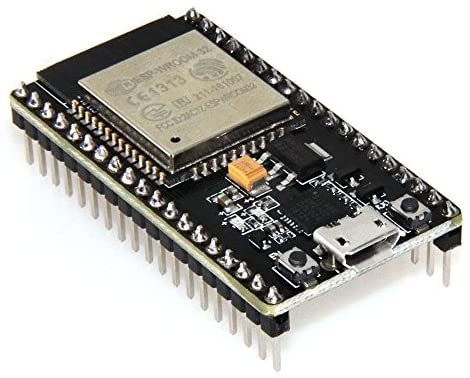De ESP 32 is het brein van de schakeling. Dit onderdeel kan de programmacode uitvoeren en de andere onderdelen aansturen. De ESP bevat ook een netwerkkaart waarmee het verbinding kan maken met een draadloos netwerk.
LDR:
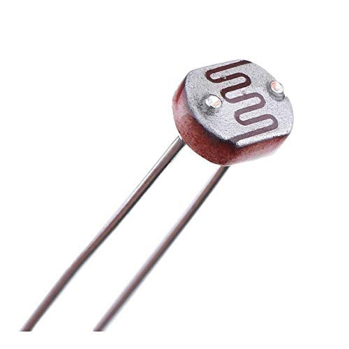De LDR (light-dependend resistor) is een lichtgevoelige weerstand. De weerstandswaarde wordt beïnvloed door de hoeveelheid licht die op de sensor valt. Wanneer er te weinig lichtinval is, wordt de lamp aangezet.
Moisture Sensor:
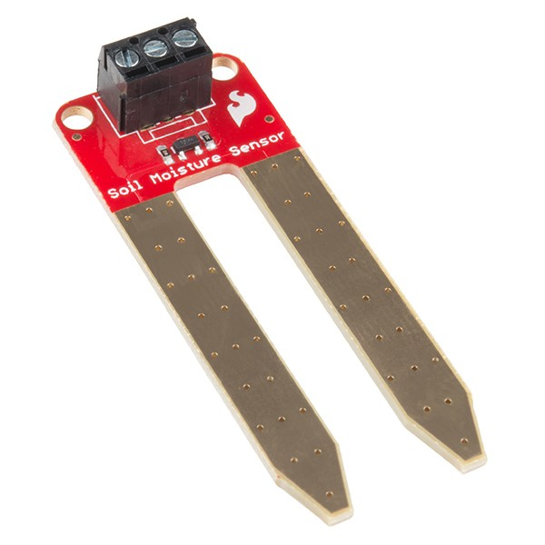De Moisture Sensor meet de vochtigheid (In dit geval) van de aarde. Dit onderdeel koppelt een waarde aan de vochtigheid. Hoe lager de waarde, hoe droger de aarde. Deze waarde wordt verderop in de schakeling gebruikt om componenten mee aan te sturen.
DHT:
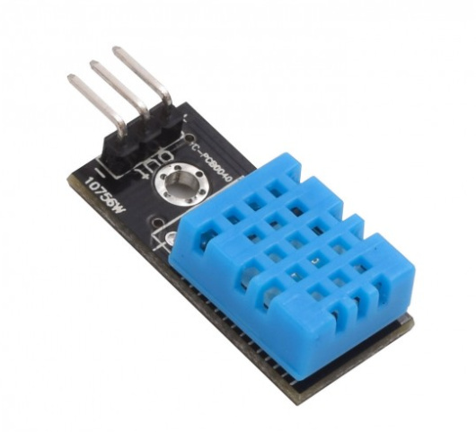De DHT (Digital Humidity & Temperature) sensor wordt in deze schakeling gebruikt om de temperatuur te meten. Dit onderdeel koppelt een waarde aan de temperatuur. Deze waarde kan later in de schakeling gebruikt worden om componenten mee aan te sturen.
Relay:
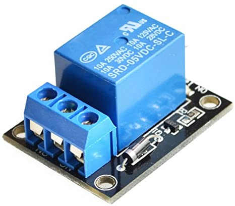De Relay wordt in deze schakeling gebruikt als schakelaar voor de pomp. Wanneer de waarde van de Moisture Sensor te laag is, geeft de ESP een signaal aan de Relay om de pomp aan te zetten.
Pomp:
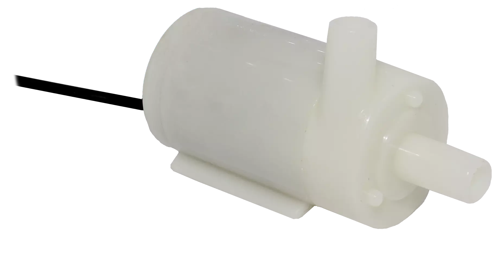De Pomp wordt in deze schakeling gebruikt als... pomp. Wanneer de Relay de pomp aanzet en de pomp in een bak met water ligt, verplaatst de pomp het water vanuit de bak (via de slang) naar de plant.
De Printplaat
Het Breadboard
Voordat alle onderdelen met elkaar kunnen communiceren, moeten ze met elkaar in verbinding staan. In de eerste vier weken van "Smart Technology" is deze verbinding gerealiseerd door middel van een Breadboard. De afbeeldingen hierdonder laten zien hoe deze verbinding eruit ziet.
Het ontwerp
Van week 5 tot en met week 7 ben ik bezig geweest met het ontwerpen van een "Printed Circuit Board" (PCB). Het ontwerpen van het PCB is gedaan met behulp van het programma 'EAGLE'. Hieronder volgt mijn schematische tekening, waarin te zien is dat de onderdelen allemaal op verschillende punten van de ESP zijn verbonden.
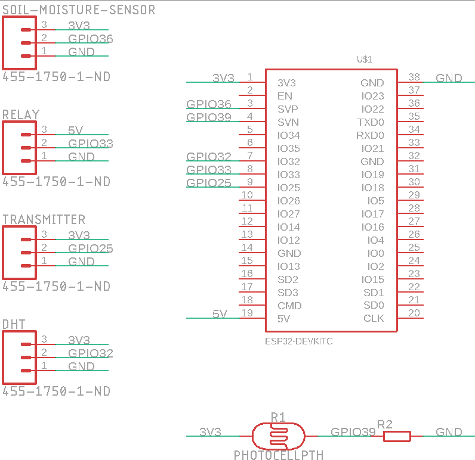 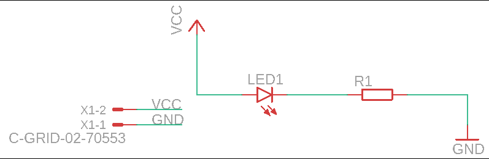De volgende stap is het daadwerkelijke ontwerpen van de fysieke aspecten van het PCB. Hierbij zijn de volgende punten van belang:
- De afmetingen moeten juist zijn;
- De onderdelen moeten op de juiste plek zitten;
- De stroomdraden moeten op de juiste manier worden geplaatst.
Om dit te realiseren biedt EAGLE bepaalde functies die helpen bij het ontwerp. Het resultaat is hieronder te zien:
 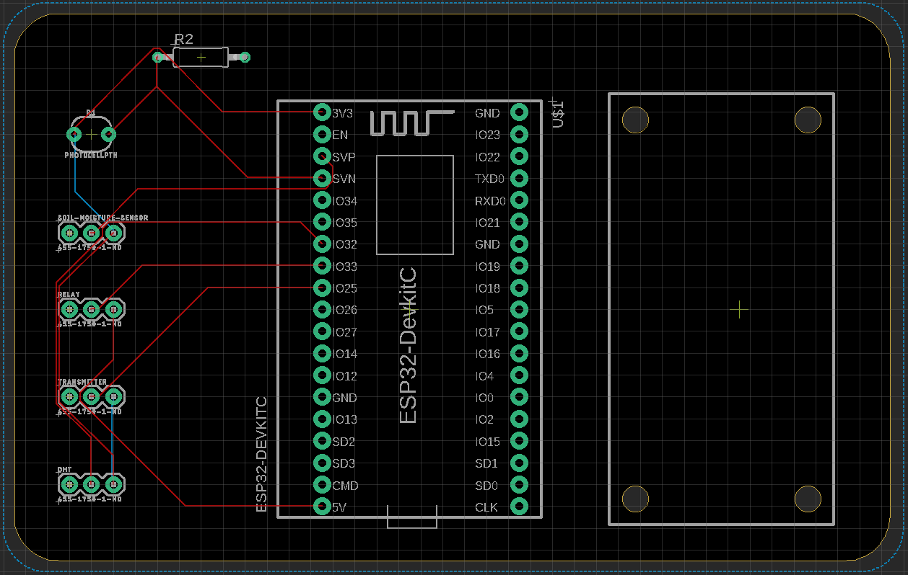
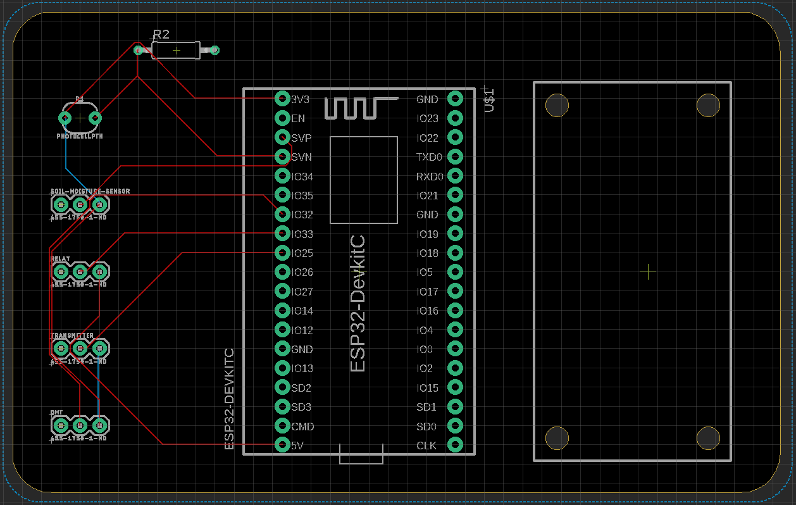
Het eindproduct
Zodra het ontwerp af is, wordt deze opgestuurd naar de begeleiders. Deze beoordelen het ontwerp en wanneer dit goed is, worden de ontwerpen doorgestuurd naar de fabrikant. Binnen enkele weken komen de PCB's binnen bij de studenten. Het resultaat, mijn fysieke PCB, is hieronder te zien:
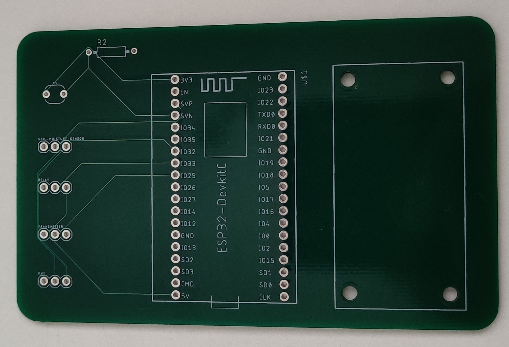Solderen
Maar we zijn nog niet klaar met de printplaat. Om te zorgen dat de onderdelen met het PCB (en dus met elkaar) in verbinding staan, moeten de onderdelen op de printplaat worden gemonteerd. Aan de studenten is de taak om op je eigen slaapkamer te gaan solderen! Dit is een leuke uitdaging gebleken. De docenten hebben ons verwezen naar het juiste gereedschap (een soldeerbout van 15 Watt en een rol tin). Met het juiste gereedschap in huis ben ik begonnen met solderen. Hieronder is het resultaat te zien met uiteindelijk de bekabelde printplaat:
Het eindresultaat
In de video hieronder is een demonstratie van mijn werkende plantwatersysteem te zien:
Beschrijving
Het plantwatersysteem werkt als volgt:
De Moisture Sensor meet iedere 30 seconden de vochtigheid van de aarde waar de plant in staat. Wanneer deze waarde onder de 1000 is, is de grond te droog en stuurt de ESP een signaal naar de Relay.
De Relay activeert op zijn beurt weer de pomp. Deze pompt gedurende 2 seconden water naar de plant. Vervolgens wordt de waarde weer opnieuw gemeten. Dit blijft net zolang doorgaan totdat de aarde vochtig genoeg is.
Hiernaast meet de LDR de hoeveelheid licht die binnenkomt bij de plant. Wanneer de waarde onder de 700 is, komt er te weinig licht binnen en stuurt de ESP een signaal naar de RF-transmitter.
Deze stuurt op zijn beurt weer een signaal naar de KlikAanKlikUit om de lamp aan te zetten. Jammer genoeg is mijn KlikAanKlikUit kapot gegaan en heb ik deze functie aangetoont door de LED op de ESP aan te zetten.
Programmacode
De code die tijdens deze demonstratie is gebruikt is hieronder te zien:
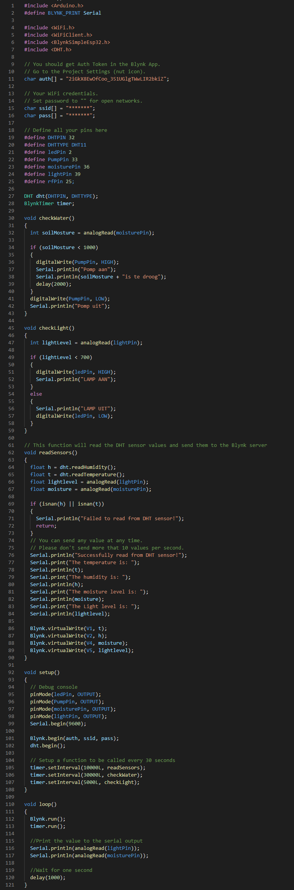Blynk
Er worden ook live waardes naar de Blynk App gestuurd. Op deze manier is te controleren wat de status van de plant is. De video hieronder laat zien hoe de waardes live veranderen met een interval van 5 seconden.
Het Smart Project
Voor het vraagstuk "3D printing" heb ik samen met mijn projectgroep onderzoek gedaan naar het introduceren van 3D-printen in productie bij ATAG. Voor meer informatie over dit project, klik hier. Onderstaande video is de presentatie van mijn projectgroep, met betrekking tot 3D-print technieken:
Het Plantwatersysteem
Ik heb deze opdracht als zeer leerzaam ervaren. Omdat ik op mijn opleiding HBO-ICT voor de Infrastructure, Security & Management kant heb gekozen, heb ik nog niet eerder met minicontrollers gewerkt.
Ik ben wel bekend met programmeertalen en dit was voor mij dan ook geen stijle leercurve. De lessen waren goed opgezet en verveelde niet.
Ook het ontwerpen van een PCB en het maken van een elektrisch schema is iets dat ik nog niet eerder heb gedaan. Tijdens deze lessen heb ik vooral nieuwe dingen geleerd met betrekking tot de verbindingen tussen bepaalde onderdelen.
Het solderen is voor mij geen nieuwe ervaring, maar wel iets dat ik al bijna 10 jaar niet meer gedaan heb.
De eerste paar connecties gingen moeizaam en voor mijn gevoel had de soldeerbout ook net iets te weinig vermogen, maar tegen het einde verliep het solderen veel soepeler.
Het resultaat stelde uiteindelijk ook niet teleur.
Omdat ik mijn code al een paar keer in de Breadboard setting had getest, wist ik dat de code werkte, hier waren dan ook geen verassingen.
Uiteindelijk waren de mankementen van het materiaal de grootste knelpunten, maar als ICT'er ben ik ook niet anders gewend.
Het maken van een eigen IoT schakeling is een hele leuke en leerzame ervaring gebleken. Dit is ook zeker iets waar ik na deze minor verder mee wil hobbyen.
3D Printing
Mijn reflectie en ervaringen met bertrekking tot 3D-printen zijn op deze pagina te lezen.